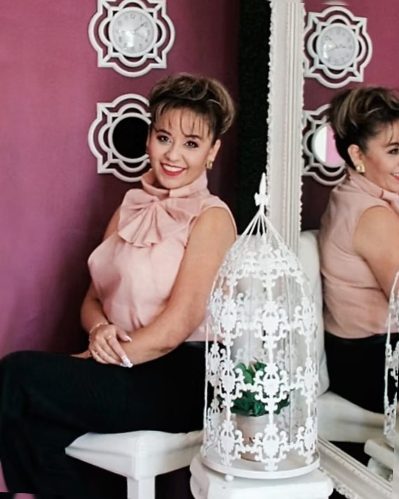

Mi historia

-
Mi historia
- Mi historia… María Dolores Flores fundadora de Mujer Bonita Como Tú, Licenciada en Administración de Empresas de profesión y quien desde siempre ha tenido una misión social que ha desarrollado a lo largo de su vida desde diferentes plataformas. Nació en Toluca Estado de México, inició el espacio de Mujer Bonita Como Tú en el año 2015, con la intención de ayudar a que las mujeres reconocieran su potencial interior.
- “Desde siempre me he relacionado con un gran número de mujeres emprendedoras y exitosas, sin embargo; son mujeres que guardan grandes dolores y diferentes problemáticas que merman su sensibilidad, confianza en sí mismas y una vida feliz; por ello a través de Mujer Bonita Como Tú, trato de compartir valiosas alternativas que descubrí y ahora sé que si decides pueden llevarte a erradicar todas esas carencias, limitaciones, temores, apegos e inseguridades que no te permiten el logro de una vida plena y feliz; por ello te invito a que vivas este maravilloso proceso y compruebes que si tienes la decisión y la convicción desde tu corazón, tu vida será capaz de tomar otra acción”.

- MUJER BONITA COMO TÚ surge de una amarga experiencia personal, con toda una vida por delante llena de proyectos personales y profesionales; entre los que ya se habían materializado la creación de su propia empresa y la culminación de una relación de noviazgo, y a un paso de casarse; pierde todo. Marylo sufre un accidente que la lleva a quedar postrada en una cama que le impide seguir al frente de su empresa, la cual se declara en quiebra, y al mismo tiempo se enfrenta al desafortunado rompimiento de su compromiso matrimonial.
- Ante este panorama tan crítico y desolador aparecen las ganas de ya no querer vivir e incluso de cuestionar la existencia de Dios, sumida en una gran depresión por la pérdida de “su todo” se aisla del mundo y es entonces cuando todo tipo de enfermedades y padecimientos comienzan a hacer su aparición, derivado de ese aislamiento auto impuesto y debido a la gran inestabilidad emocional en que se encontraba, sube de peso de manera descontrolada; desarrolla un extraño tumor en la tiroides y quistes peligrosos y de acelerado crecimiento en la matriz; por lo que comienza un largo camino buscando alternativas médicas y terapéuticas sin encontrar diagnósticos alentadores.
- Finalmente triste y decepcionada por no encontrar acertados y efectivos tratamientos médicos, logra sanarse con técnicas de sanación y fortalecimiento del ser interior mediante un trabajo terapéutico y disciplinado basado en el manejo de las EMOCIONES; trabajando MENTE, CUERPO y ESPÍRITU con técnicas de meditación.
- Hoy en día quienes la conocieron en ese proceso doloroso, no dan crédito a la Marylo actual; logró nuevamente ponerse de pie, recuperó su talla sin dietas, desapareció el tumor que se le había desarrollado en la tiroides y eliminó los innumerables quistes en la matriz; además de recuperar esa seguridad y alegría por la vida que siempre la caracterizó. Hoy su misión social la renueva a través de un nuevo concepto, “MUJER BONITA COMO TÚ”; apoyando a mujeres que requieran y busquen un desarrollo integral.
-
Mi agradecimiento:
- En una mirada en retrospectiva en este proceso de dolor, más que reclamar he comenzado a gradecer; pero genuinamente y no por compromiso, ya que este valor me ha ayudado a vibrar en positivo en mi crecimiento personal. Es posible que seres tan especiales en mi vida ni se acuerden de cómo me cambiaron al apoyarme incondicionalmente, al aligerar esa carga tan pesada y que de verdad me estaba ahogando; son personas que se han ganado un lugar preponderante en mi vida.
- Sin falso alarde ni escandalosos aplausos, porque el agradecimiento en silencio no sirve de nada, llegó el momento de mostrarles que ese apoyo ha valido la pena para el nacimiento de este ESPACIO llamado MUJER BONITA COMO TÚ!!!. Doy gracias y espero encontrar en mi vida a más personas como: El contador Víctor, su esposa Natalia y la pequeña Lalis, quienes me cobijaron, abrazaron y ayudaron a unir mis partes rotas.
- Los contadores José Luis y Luis Horacio; en esos momentos tan complicados que me tocó vivir siempre se quedaron a mi lado, me mostraron que la amistad no es cuestión de tiempo sino de apoyo y compromiso.
- Grandes amigos incondicionales: Marisbeide, Jesús y Javier; su riqueza radica en dar sin esperar nada a cambio, fortalecieron y enriquecieron mi interior con su valiosa compañía.
- A los médicos Liliana N y Arturo Pichardo: En alguna ocasión escuché esta frase: “Si el cirujano opera a un enfermo sin hacer algo para ayudarle a cambiar la causa de la enfermedad; todo lo que hace es prolongar la vida del paciente, hasta que este pueda crearse otra enfermedad”; y en este sentido las palabras y el trato más cálido que recibí fueron con estos increíbles seres humanos, ese trato le dio un cambio positivo a mi vida, para ellos no fui un número o un expediente más, fui una persona digna y merecedora de amor y salud.
- Y por su puesto mi familia: Mi principal fuente de apoyo y a donde siempre regreso para encontrar mi centro. El ser humano se forma en base a tres cuadrantes: FÍSICO, EMOCIONAL y ESPIRITUAL y para sentirnos plenas es necesaria la satisfacción de estas necesidades, por lo que MUJER BONITA COMO TÚ ha realizado diferentes alianzas que conllevan a cumplir dicho objetivo; mismo que permitirá a nuestras mujeres recuperar su seguridad, lograr un mayor empoderamiento y elevar su auto estima.
- Hoy te invito a que descubras el ser maravilloso que ERES, permítete crear una vida llena de Salud, Prosperidad, Amor, Paz Interior y Armonía.